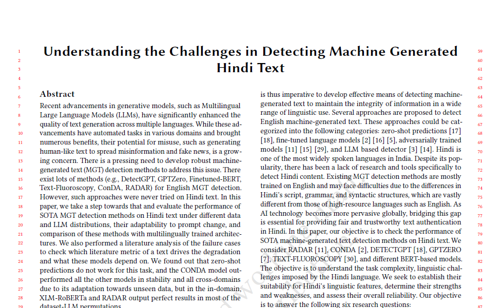
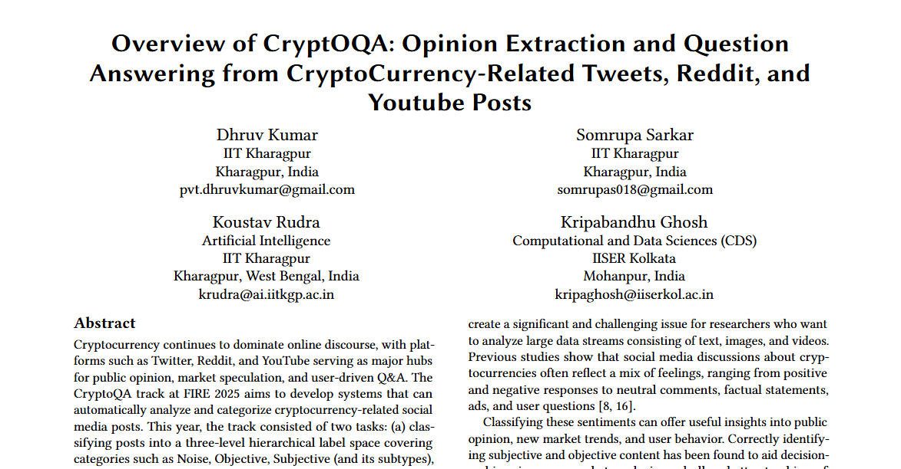
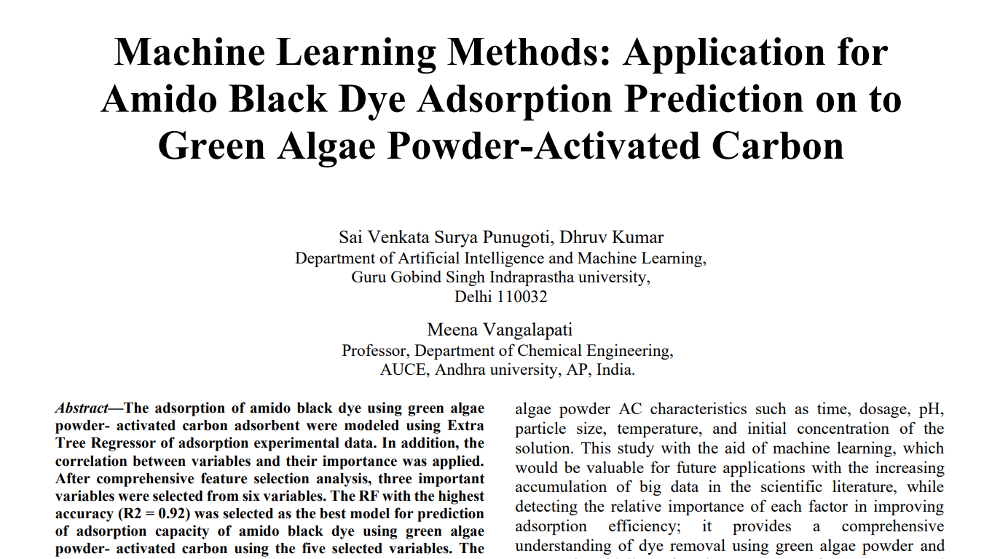
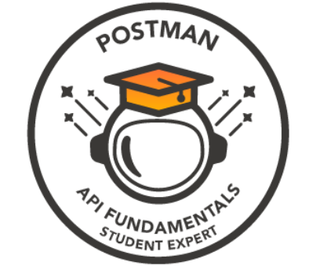

// AI Engineer × Researcher
DHRUV.
KUMAR
Multimodal · AI/ML · NLP · Computer Vision
Let's Collaborate →// AI Engineer × Researcher
Multimodal · AI/ML · NLP · Computer Vision
Let's Collaborate →I am an AI Engineer and Researcher from India with 1.5+ years of professional experience. Passionate about building large-scale systems and advanced AI, pursuing cutting-edge research in Deep Learning, Multimodal AI, NLP & Computer Vision, developing multi-agent frameworks, knowledge-retrieval pipelines, and data-driven models.
Currently working at SRIC, IIT Kharagpur, I focus on bridging research with real-world applications through scalable AI systems built with Python and modern ML frameworks. I enjoy solving complex problems with a competitive programming mindset and exploring how AI can transform ideas into impactful technology.
[ AI Development ]
Developing ML models, AI agents, and intelligent automation tools. Focused on designing scalable AI systems, working with LLMs, deep learning, and data-driven models to solve real-world problems.
// Languages


// ML Frameworks


// Libraries


[ Research ]
Working on multimodal AI, multi-agent systems, and applied machine learning research to push the boundaries of intelligent systems. Focused on experimenting with novel architectures, data-driven modeling, and bridging academic research with practical AI applications.
// AI / LLM & Frameworks


// Developer Tools


// Focus Areas
Indian Institute of Technology Kharagpur
Kharagpur, West Bengal, India
Junior Project Engineer

Prodigal AI Technologies
New Delhi, India
Machine Learning Intern [PyPI] [Source Code] [Web App]

ISRO – SDSC SHAR
Sriharikota, Andhra Pradesh, India
Machine Learning Intern [View Website]
Spectral Perturbation Engine for Contrastive Inference Over Universal Surrogates
SPECIOUS — Spectral Perturbation Engine for Contrastive Inference Over Universal Surrogates
A universal, multi-model defensive technique that embeds imperceptible high-frequency perturbations into the luminance (Y) channel of YCbCr representations — invisible to humans but systematically degrades feature embeddings across ResNet-50, CLIP ViT-B/32, and other surrogate models, preventing generative AI from reproducing copyrighted artistic styles.
SnookyDru / SPECIOUS
Loading repository data...
Encoder-Decoder Transformer for the Hangman Word-Guessing Game
SnookyDru / Hangman-Encoder-Decoder-Transformer
Loading repository data...

Comprehensive evaluation of SOTA MGT detection methods adapted for Hindi across 6 RQs. Benchmarks XLM-RoBERTa, RADAR, ConDA, IndicBERT, DetectGPT, GPTZero, and Text Fluoroscopy on Hindi datasets with Gemini 1.5, Llama 3, and Qwen3. ConDA was the most stable across domains; zero-shot detection fundamentally fails for Hindi due to perplexity inversion.
[Conference]
Overview of the CryptOQA shared task at FIRE 2024, evaluating post classification and QnA on cryptocurrency social media (Twitter & Reddit). Tasks include 8-class opinion classification and question-answer relevance detection. Transformer models (RoBERTa, XLM-RoBERTa) outperformed baselines; prompt-based GPT-4-Turbo approaches led QnA performance.
[ACM DL]
Applied ML methods to predict amido black dye adsorption onto green algae powder-activated carbon adsorbent. Demonstrates ML applications in environmental engineering for sustainable wastewater treatment solutions.
[IJERT] [PDF]
Naukri Campus Young Turks
Naukri Campus · Oct 2024
95.25% percentile — India's Largest Skill Contest
[View Certificate]
Project-Based Learning: Build an AI Text Summarizer App
Postman · Jun 2024
Skills: Python · HTML5 · CSS · ML · AI
[Verify Credential]Certification of Publication — JETM
Elsevier · May 2024 · ID: JETM/8210
Extra Tree Regression Model for Atrazine Herbicide Removal using ML
[View Certificate]
Research Paper Presentation — ICMSMT 2024
Diligentec Solutions · May 2024
Skills: Research · AI · Presentation · Communication
[View Certificate]
Postman API Fundamentals Student Expert
Postman · May 2024 · ID: 6658cf44
Skills: APIs · Computer Science
[View Badge]A deep dive into the landmark 2001 CV paper by Paul Viola and Michael Jones — HAAR features, integral images, AdaBoost, and cascaded classifiers explained with clarity and storytelling.
Read on Medium →A hands-on guide to extracting real-time RGB colour values from a webcam feed using Python and OpenCV — a practical project walkthrough for CV beginners.
Read on Medium →An introspective first case study exploring problem-solving, analytical thinking, and applying ML concepts to real-world scenarios.
Read on Medium →// Submission Activity — Last 52 Weeks
B.Tech — Artificial Intelligence & Machine Learning
Guru Gobind Singh Indraprastha University, New Delhi
Diploma — Computer Engineering
Ambedkar DSEU Shakarpur Campus 1, New Delhi